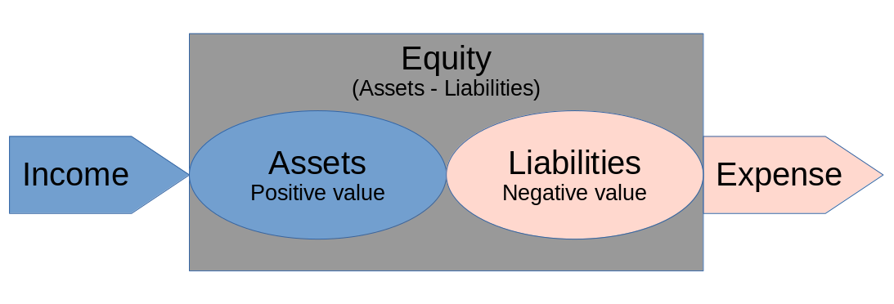

Accounting With Gnucash
Things to remember when using GnuCash for Accounting
Table of Contents
1. Accounting
1.1. Types of accounts
There are five fundamental types of accounts.
- Assets - are things you have, like cash in an account or stocks of a company.
- Liabilities - are things that you owe, like a loan that you have to payback.
- Equity - This is the net worth;
Total Assets - Total Liabilities. - Income - When you earn money by providing a service, that is income.
- Expense - When you spent money for goods or service, that is expense.
1.1.1. Balance Sheet Accounts
Assets, Liabilities, and Equity are called balance sheet accounts. These can show what you own and owe at a given point in time.
1.1.2. Income and Expense Accounts
Income and Expense, naturally called Income and expense accounts show the change of values over a period of time.
1.1.3. GnuCash Account types
GnuCash have twelve types of accounts based on the five fundamental types of accounts.
| Fundamental type | GnuCash type | Remarks |
|---|---|---|
| Assets | Cash | To track money in hand; most liquid |
| Assets | Bank | Money in bank; second most liquid |
| Assets | Stock | Track stocks and bonds |
| Assets | Mutual Fund | Same as stock, but for funds |
| Assets | Accounts Receivable | Business use; receivable bills |
| Assets | Other Assets | Other assets not covered by the above |
| Liability | Credit Card | To track credit card receipts |
| Liability | Accounts Payable | Business only; payable bills |
| Liability | Liability | To track loans, like car loan |
| Equity | Equity | Mostly used for opening balance |
| Income | Income | Payment received for services provided |
| Expense | Expenses | Money spend for goods or services |
1.2. Accounting Equation
This equation must always be balanced.
Assets - Liabilities = Equity + (Income - Expenses)

1.2.1. Double entry accounting system
For the accounting equation to be always balanced, when ever there is a transaction that changes the value of one of these accounts, it should also change another account such that equation is balanced. This means that every transaction will have two entries. For example, assume that you bought a movie ticket for 10€ using a credit card. This is obviously an expense, and therefore will increase your expense account. But you also have to payback the 10€ to the credit card later, so you also have to add 10€ to your liabilities account. Thus the equation remains balanced. Now assume that you get 100€ as salary. This is your income, and it will also increase your assets; again two accounts are modified. And when you payback the 10€ to the credit card, the assets go down, so does the liabilities. This system of accounting where every transaction will always change two accounts is called the Double entry accounting system.
1.3. Debit and Credit
The account equation can be rearranged to the following.
Assets + Expenses = Equity + Income + Liabilities
In the above form, the left hand side is debit balance accounts and the right
hand side is credit balance accounts. This means that a debit transaction
will increase the value of Assets and Expenses, while decreasing the value of
Equity, Income and Liabilities. Conversely, a credit transaction will decrease
the value of Assets and expenses, while increasing the value of Equity, Income
and Liabilities.
| Account | On Debit | On Credit |
|---|---|---|
| Assets | Increase | Decrease |
| Expenses | Increase | Decrease |
| Equity | Decrease | Increase |
| Income | Decrease | Increase |
| Liabilities | Decrease | Increase |
2. Accounts and transactions
In GnuCash, all data is stored in a File, which contains multiple Accounts, which in turn contains muliple transactions. File can be an actual xml file on the disk or it could be an SQL database. Either way, we work on one file at a time. Inside a file, we’ll have multiple accounts. Each account will have a name, and a type that is one of the twelve account types supported by GnuCash.
And transactions are organised into accounts. Each transaction is added to two accounts to balance the accounting equation.
2.1. Placeholder accounts
These are special kind of accounts that is used to organise other accounts. A
placeholder account won’t contain any transaction directly in it. Instead it
will have other sub-accounts with transactions.
2.2. Transactions
A transaction in a double entry accounting is between at least two accounts. A single transaction usually contains two parts, a from and a to. In GnuCash, each such part is called a Split, instead of the more formal term Ledger Entry. GnuCash supports multiple splits in a single transaction, but there should be atleast two by default. Each split moves money into or out of an account.
A transaction with only two split is called a Simple Transaction, and a transaction with three or more split is called a Split Transaction.
2.3. Reconciliation
Reconciliation is the process of verifying the correctness of a transaction. The R Field in the account register indicate the reconciliation status for each transaction.
| R | meaning |
|---|---|
n |
new - not reconciled |
c |
cleared - not reconciled |
y |
reconciled |
Imagine that you write a check for 100€, initially the transaction is in new
(n) state. Later you got confirmation that the check is cached, then the
transaction should be marked as cleared (c). And later when you can verify the
transaction with a bank statement, it can be marked as reconciled (y).
3. Data entry using shortcuts
Transactions are added to accounts in the Register window.
3.1. Entering Date
| Shortcut | Action |
|---|---|
+ or = |
Increment date |
- or _ |
Decrement date |
] or } |
Increment month |
[ or { |
Decrement month |
m or M |
First date of month |
h or H |
Last date of month |
y or Y |
First date of year |
r or R |
Last date of year |
t or T |
Today’s date |
3.1.1. Partial dates
- A single number is interpreted as day in current month and year.
- When a day and month is specified, year is added automatically.
3.2. Built-in calculator
All amount fields support simple arithmetic operations like +, -, \*, / to be
performed.
3.3. Moving around register
| Shortcut | Action |
|---|---|
Tab |
Move to next Field |
Shift+Tab |
Move to previous Field |
Home |
Move to beginning of the Field |
End |
Move to the end of the Field |
Enter or Down |
Move to the next transaction |
Up |
Move to the previous transaction |
Page Up |
Move up one screen |
Page Down |
Move down once screen |
Shift + Page Up |
Move to very first transaction |
Shift + Page Down |
Move to very last transaction |